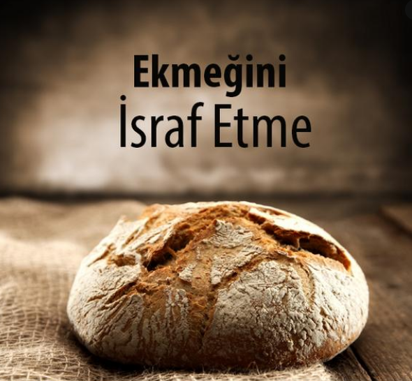

 |
|---|
Fırın:Fırınlarda Ekmek israfı Gıda israfı , özellikle de 'ekmek israfı' hem ülkemizin hem de ülkelerin başlıca sorunlarındandır. Ülkemizi baza alırsak, fırınlarda çokça üretilen ekmeklerin bayatlayarak alıcıya gidemeden satıcının elinde kalması ile çöpe gitmesi söz konusudur. Ayrıca insanlardan kaynaklanan ekmek israfı da söz konusudur. Eve alınan ekmekler tüketilmeden bayatlamaktadır. İnsanlarımız taze ekmek tüketmek istediklerinden bayatlayan ekmeği tüketmemektedir. Bu durumda ekmekler ya çöpe ya da dışarılarda bir yerlere asılmaktadır.Bizlerde "israf etmeden paylaş projesi sayesinde sizlere ulaşmak ister,Artan yemekleri ihtiyaç sahiplerine en kısa sürede ulaştuırmayı hedefliyoruz |
Adres:Kurtuluş, Fevzi Paşa Cd. 89/B, İzmir |
| Adresi Bul |